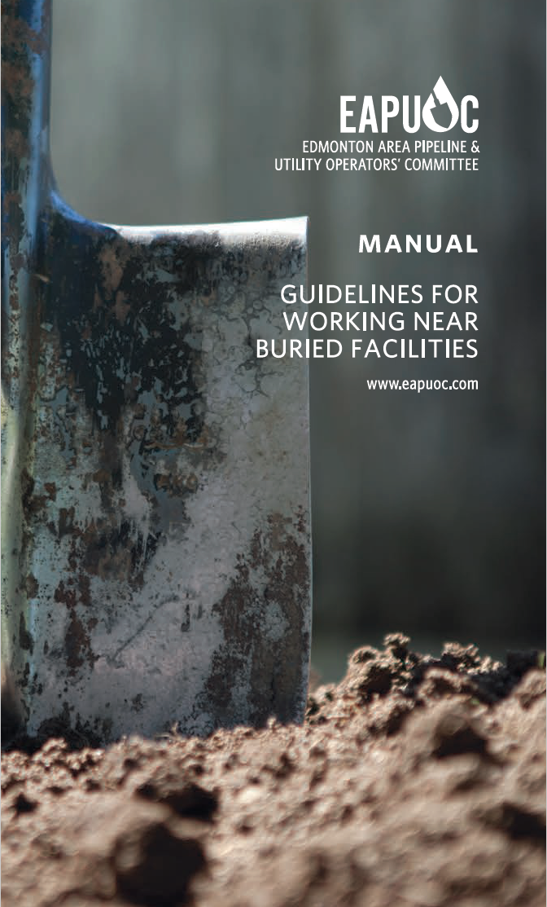
PREFACE
EAPUOC (Edmonton Area Pipeline and Utility Operators’ Committee) is a not-for-profit, non-statutory, voluntary membership association engaged in activities to encourage and promote “Guidelines for Working Near Buried Facilities” and to provide a communications network in the event of an emergency affecting one or more of its members.
Considerable effort has been made to ensure the accuracy and reliability of the information contained herein. However, neither the Committee nor any of its participating members accepts liability for any loss, damage or injury whatsoever resulting from the use of this information.
All those using this Manual acknowledge that they do so at their own risk and they specifically waive any rights that they may have against any of the contributors and sponsors for loss suffered as a result of their reliance on the information contained in this Manual.
Developed By EAPUOC Membership With Input From Interested Stakeholders
Issue #6
(September 2017)
i
THE FOLLOWING COMPANIES ARE MEMBERS OF EAPUOC
Pipeline Operators
- Access Pipeline Inc.
- Air Liquide Canada Inc.
- Air Products Canada Ltd.
- Alliance Pipeline Ltd.
- AltaGas Ltd.
- ATCO Energy Solutions Ltd.
- ATCO Pipelines
- Enbridge Pipelines Inc.
- Gibson Energy Ltd.
- Imperial Oil Pipelines & Distribution
- Inter Pipeline Ltd.
- Keyera Corp.
- Kinder Morgan Canada Inc.
- NOVA Chemicals Corporation
- Pembina Pipeline Corporation
- Plains Midstream Canada ULC
- PRAXAIR Canada Inc.
- Shell Canada Products Limited
- Suncor Energy
- Trans-Northern Pipelines Inc.
Utility Operators
- ATCO Gas
- City of Edmonton - Operations
- EPCOR Utilities Inc.
- TELUS Communications Inc.
Municipal/Regulatory/Others
- Alberta Energy Regulator (AER)
- Alberta Infrastructure
- Alberta One-Call Corporation
- Alberta Health Services
- City of Edmonton - Fire Rescue Services
- City of Edmonton - Sustainable Development
- City of Fort Saskatchewan - Fire Department
- City of St. Albert
- Leduc County
- National Energy Board (NEB)
- Strathcona County - Emergency Services
- Strathcona County
ii
What Is Working Near Buried Facilities?
Any activity that disturbs the ground in the control/prescribed area of a buried facility (30 meters on either side of the buried facility).
Working near buried facilities includes:
- excavation
- digging
- trenching
- drilling
- pipe pushing
- topsoil stripping
- grading
- ditch shaping
- land leveling
- tunneling or boring
- rock picking
- tree planting
- blasting
- vibrosis
- logging
- subsoil aeration
- plowing pipe or cable
- driving over or parking on right of ways
- vertical & horizontal augering
- driving bars, posts or anchors
- fire fighters cutting fire breaks
- removing buried facilities
- or any other activity which disturbs the ground near any buried facility
2
What Are Buried Facilities?
Any item located below the surface of the ground! These facilities may be privately (landowner) or publicly owned.
They include:
- pipes
- conduits
- manholes
- duct banks
- wires
- fiber optics
- cables
- lines
- valve chambers
- culverts
- catch basins
- attachments to these items
These facilities are used for the transmission, distribution, storage or collection of:
- water
- sewage
- electrical energy
- oil
- natural gas
- petroleum products
- chemicals
- communications
- steam
- storm water
- cablevision
- other substances
3
Where Buried Facilities May Be Found.
An extensive network of buried facilities may be found at depths, ranging from just below the surface to very deep. This makes all these facilities susceptible/vulnerable to damage by ground disturbance activities. These facilities may be found on public or private property, rights of way or easements. In other words, buried facilities can be found anywhere at any depth.
In urban areas and on private property, many facilities are within 300mm of the ground surface. Street light wires are often just below the sidewalk. Communication and electrical duct banks in downtown cores may be just under the asphalt.
The depth of initial cover over buried facilities may be substantially reduced where they have floated in wet areas or due to landscaping, soil erosion or agricultural activity.
How Can Buried Facilities Be Damaged?
Even minor nicks and gouges on pipelines and other buried facilities are serious. Corrosion could occur rapidly causing leaks, possible emergency situations, and the interruption of utility and communication services. Negligence, sloppy workmanship, lack of awareness, poor planning, or thoughtlessness, may result in severe penalties to those responsible.
4
Possible consequences of damaging a buried facility include:
- loss of life
- personal injury
- evacuation of residential areas
- disruption of essential services
- explosion, fire, flood or toxic gas escape
- environmental contamination
- third party property damage
- inconvenience to the public
- loss of product and revenue
- damage to construction equipment
- contractor down time & loss of production
- costs to rehabilitate injured workers
- costs to repair damaged facility
- costs to rehabilitate environment
- costs to repair or replace construction equipment
- police, fire, ambulance costs
- lawsuits and legal costs
- medical costs
- administration costs
- increased WCB assessments
- increased insurance premiums
- reduced credibility with the public
- reduction in contractors ability to be competitive
- fines and/or jail terms
5
Who Risks Damaging Buried Facilities?
Anyone who engages in, or is responsible for a ground disturbance including:
- homeowners
- owners of buried facilities
- farmers
- consultants
- ranchers
- developers
- contractors
- provincial departments
- home builders
- federal departments
- landscapers
- railways
- equipment operators
- municipalities
Ground disturbance activity by any of the above groups could result in damage to a buried facility.
Definition of a ground disturbance - for the purposes of these guidelines, the protection of buried facilities and the safety of workers and the general public, any disturbance of the earth must be considered to be a ground disturbance.
All individuals planning and/or working near a buried facility must be aware of how damages commonly occur and of the methods for their prevention.
The following examples describe common causes of damage to buried facilities and how they can be prevented.
6
|
Failure to establish the presence of buried facilities
|
- Contact the applicable one-call center.
- Check with applicable regulatory and municipal authorities.
- Look for indications of ownership onsite
- Look for buried facility markers in the area.
- Check with Land Titles office.
- Check with owner of buried facilities.
(These contacts may be available in the applicable telephone directory.)
|
|
Failure to check alignment of buried facilities.
SITUATION 1
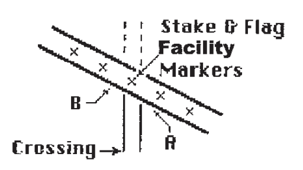
The crossing is not at right angles. The machine operator does not realize that point A is actually closer than he believes and he hits the pipe at that point.
|
The existing facility should be staked, hand exposed & flagged so its alignment is clear.
|
7
SITUATION 2
 The facility crosses a road at right angles. Markers are set at points X and Y. The operator assumes that the facility continues in a straight line and is located at point B. The facility is hit at point A.
The facility crosses a road at right angles. Markers are set at points X and Y. The operator assumes that the facility continues in a straight line and is located at point B. The facility is hit at point A.
|
Hand Expose before ditching anywhere in the area.
Ensure the facility is located at THE POINT OF CROSSING.
|
SITUATION 3
 Multiple parallel buried facilities run in a “corridor”. Only one is identified with the owner’s name. That facility is correctly located and marked. Because the search was incomplete the other facilities were not marked, and a facility at point B was hit.
Multiple parallel buried facilities run in a “corridor”. Only one is identified with the owner’s name. That facility is correctly located and marked. Because the search was incomplete the other facilities were not marked, and a facility at point B was hit.
|
Ensure ALL buried facilities are hand exposed, visible, and positively identified.
|
8
SITUATION 4
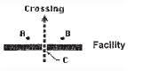
The contractor used the existing markers A and B to “locate” the buried facility. Because they were not accurately placed, the buried facility was hit at point C.
|
Contact the facility owners before digging. They will send a trained person to identify and mark the location of the buried facility. Hand expose the facility before digging.
|
|
Failure to identify pipeline
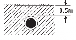
This operator thought that the pipe was safe at 1.0m. He hit the pipe after digging 0.5m.
|
Hand expose the pipeline at appropriate intervals before digging to determine exact depth. Depth of pipe & alignment must be clearly marked.
|
9
|
Failure to identify locate marks correctly.
|
|
SITUATION 1
Locate marks were placed but were disturbed before work began.
|
Have damaged or missing locate marks replaced.
|
SITUATION 2

Marks A and C were used for alignment and the facility was hit at point B
|
Contact the owner. Place additional locate marks on the curved section of the facility and hand expose the facility before mechanical digging takes place.
|
SITUATION 3

The right of way markers at B. were confused with the pipe centerline markers at A. The pipeline was hit at point C.
|
Contact the owner and hand expose the pipeline before mechanical digging. Paint information on stakes or temporary signs. Ensure the crew knows the color code of the markers used.
|
10
|
Insufficient Cover
|
|
SITUATION 1

A grader stripped 300mm of topsoil over the facility. The weight of the machine caused a rock to impact and damaged the facility.
|
Contact the owner.
Hand expose the facility prior to soil disturbance.
Construct and use travelways and ramps for machinery as specified by the owner
|
SITUATION 2
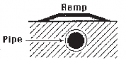
A ramp was specified for machine crossings.
Either:
a) the ramp was not built
or
b) the ramp was not used
The results were similar to Situation 1.
|
Construct and use ramps as specified by the Facility Owners.
|
11
|
The “Friday Afternoon Syndrome”
The site supervisor was busy with the end-of-week paperwork. Because the supervisor was busy, the Saturday operator did not check that his “short cut” was safe.
The operator’s “short cut” resulted in the buried facility being hit.
|
Keep all applicable documentation on site.
This is a typical communications problem. It is the responsibility of the supervisor to keep his crew informed. It is the responsibility of the crew to be informed.
|
Did not hand expose

Pipeline A was hit because it was not hand exposed before the pile was driven
|
Hand expose all pipeline before pounding anything into the ground.
|
12
Abandoned facilities

The pipeline was hit because it was not located. The pipeline was abandoned. Not all abandoned lines are marked with pipeline warning signs at road crossings.
|
All lines must be located before digging takes places.
|
|
Removing buried facilities
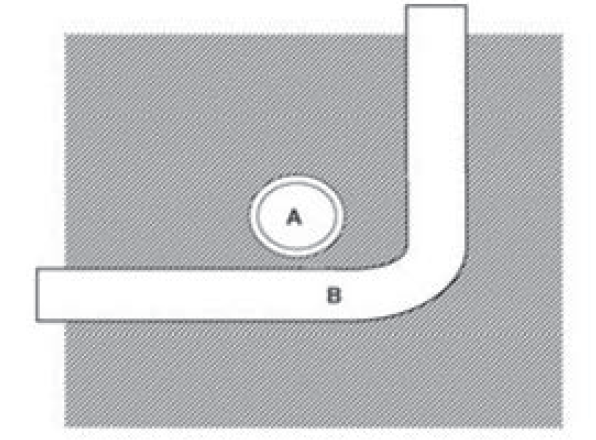
Pipeline A was hit by pipeline B when pipeline B was pulled from the ground. The operator did not hand expose pipeline A before removing pipeline B. The operator assumed that A crossed under B.
|
Hand expose all pipelines before removing anything from the ground.
|
13
Directional Drilling
The directional boring crew thought they had sufficient distance between the buried facility and their planned route, but misjudged and contacted the buried facility.
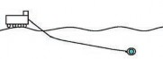
|
The buried facility should be exposed prior to work being done to confirm depth. An inspection hole located between the drill unit and buried facility and close to the buried facility should be made. This hole should extend below the facility, to visually see the boring tool just prior to it going underneath the buried facility. Consideration should be given to the size of the reamer to ensure adequate separation between facilities.
|
14
|
Failure to Identify Private Facilities
|
Discuss with landowner
|
|
These are all types of private installations that rarely have a plan or record of their installations. The intent of including them in the manual is to draw attention to the fact that these systems do exist and that there is no easy means of locating them. Good communication with the private landowner is a necessity when planning for new buried facility installations.
Agricultural Drainage Tiles:
Agricultural drainage tiles are used to drain fields with high water tables. The tiles are typically installed to a depth of one metre. There is usually no plan or record kept of agricultural drainage tile installations.
Private Water Wells:
Private water wells and water lines (including local water co-ops) are another type of private installation that may have no plan or record of their installation.
Private Sewage Disposal Systems, PSDS:

Onsite wastewater treatment is a necessity in rural areas but is also commonly used in many urban settings where there is no centralized wastewater treatment.
The process of onsite wastewater treatment requires oxygen flow into and through the soil therefore onsite wastewater disposal systems are shallow installations. Damage to a PSDS will occur if the disposal field is impacted by vehicular traffic or by depositing overburden or construction materials on the disposal field.
|
15
Improper/Unsafe Exposure Techniques
Hydro Vacing or Daylighting as it is also referred to, has become a popular alternative method of hand exposing underground facilities particularly in frozen ground or around sensitive facilities such Fiber Optic Lines, High Pressure Pipelines and High Voltage Power Lines. This process may be used where mechanical excavation is prohibited or not practical. Some companies have their own equipment used for this purpose while others will contract this service. This process uses a combination of high pressure and/or high temperature water that has the potential to damage facilities by damaging the protective coating. This can cause an immediate failure or a failure over time.
|
If anyone has any questions concerning the procedure for exposure of facilities by this process please call the operator of the facility for clarification. Facility owners require an inspector on site to supervise the work and conduct an inspection prior to back filling
|
|
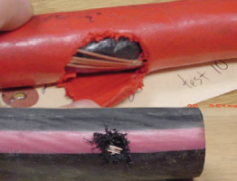
|
16
There are legal or regulatory requirements that need to be adhered to prior to commencing a ground disturbance or traveling across buried facilities with vehicles or equipment exceeding ¾ ton (excluding normal farming related equipment and recreational off road vehicles). It is your responsibility
to contact the facility owner and/or landowner prior to conducting ground disturbance activities to ensure that you comply with any legal or regulatory requirements.
One typical requirement is a crossing agreement. Usually, three parties are involved in a crossing agreement.
- The owner of the existing facility (the grantor).
- The crossor, the party undertaking the crossing (sometimes called the grantee).
- The contractor hired by the crossor to do the physical work in the crossing.
A crossing approval or crossing agreement is a regulatory requirement that must be in place before the ground within a buried facility right of way is disturbed. The owner must execute a crossing agreement with the crossor, keep track of the agreement routing, and ensure that it accurately reflects the legal requirements of the crossing. It is the crossor’s responsibility to check all known records for buried facilities and obtain the necessary agreement(s) from the owner(s) and to ensure all involved parties are aware of the requirements. The contractor is responsible for ensuring that the required agreement(s) have been obtained and are at the work site.
The contractor must give the facility owner notice before disturbing the ground within a controlled area (30 m from the centerline of the pipeline - AER regulated) or the prescribed area (30 meters from the centerline of the pipeline - NEB regulated) and follow the provisions in the agreement that affects his part of the job. If, for any reason, the contractor has not been briefed, consult the facility owner before you dig.
Consult the applicable acts and regulations.
17
Attention: If you are found to be in contravention of governing acts and regulations you may be subject to personal fines and or imprisonment. To avoid such penalties it is your responsibility to be in compliance.
Most facility owners require that the person supervising the ground disturbance have current supervisory level ground disturbance training.
1.4.1 Ground Disturber Responsibilities
- that written permission for working within the facility right of way has been obtained.
- that all existing buried facilities have been identified and their locations marked and the right of way boundaries have been posted with clearly distinguishable warning signs, except within a road allowance where there is no facility right of way.
It is recommended that the facility owners identify and mark the locations of their buried facilities.
1.4.2 It is the direct responsibility of the ground disturber to ensure that:
- written approval has been received, call the facility owner and the applicable one call center at least 2 and not more than 10 working days before ground disturbance is started.
- all agreements issued remain at the work site until work is completed.
- the existing facility has been properly located and marked and that the right of way boundaries are clearly distinguished.
- the facility must be hand exposed, visible and positively identified before using mechanical equipment in the right of way, or within the hand expose zone.
- the facility owner is on site to inspect while digging within the vicinity of a pipeline, direct bury trunk or toll fiber optic cable, or high voltage power cable.
18
- temporary fencing is properly erected and maintained along right of way to protect the facility, as required by the facility owner.
- facility owner approved ramps are constructed and maintained to allow access over right of way.
- an emergency response/procedures plan has been established.
- the facility owner has been notified at least 24 hours before covering any exposed facility.
- heavy vibrating equipment is prevented from operating over the facility unless adequate cover exists.
- exploration activity does not impact the buried facility.
- a written hazard assessment has been conducted.
- site is restored to original conditions.
- all agreements are reviewed, requirements understood and followed.
1.4.3 Crew members are responsible for asking their supervisors and supervisors are responsible for communicating to the crew concerning:
- what limitations apply
- the material and thickness of pipeline to be crossed.
- the contents and pressure of pipeline to be crossed.
- what the hazards are.
If you hit a facility
STOP WORK!
Shut off equipment if safe to do so Secure the area.
Notify the FACILITY owner immediately.
The facility owner’s responsibility includes:
- providing information about the facility and the right of way.
- providing crossing agreement or other appropriate approval to the party crossing the existing facility.
19
- providing reasonable assistance to anyone planning to cause a ground disturbance near the facility.
- ensuring that the facility crossing agreement is in place prior to work start-up.
- ensuring the facility is accurately located, identified, properly marked and hand exposed before a ground disturbance occurs within the right of way or controlled area.
- documenting the locates provided.
- keeping a written record of the inspection of the facility markers.
- monitoring or supervising any mechanical excavation within the facility right of way.
- inspecting the facility for any damage, following crossing installation and prior to backfilling. The facility owner is also responsible for keeping a written record of this inspection.
- directly supervising any mechanical excavation within the vicinity of a pipeline, direct bury trunk or toll fiber optic cable, or high voltage power cable.
- keeping records of “as built” details of the crossing.
- ensuring facility is properly installed.
- preventing exploration activities from impacting underground facilities.
- ensure site is restored to original condition.
- ensuring that facility warning markers are installed directly over the facility at all active construction areas.
- ensuring that there is adequate cover over the right of way before allowing heavy equipment to cross over vulnerable facilities. The owner may determine that ground conditions and the diameter of the facility require a greater depth of cover or other suitable protection.
- preventing heavy vibrating compactors from operating over the facility unless adequate cover exists.
- ensuring that facilities are exposed by hand digging or hydrovac only, with the facility representative present.
- inspect the facility for damage before allowing backfill.
- ensuring that facility is re-wrapped if necessary.
20
- enforcing clearance requirements between existing facility and new pipe or cable.
- supervising the installation of test leads, as per approved procedures.
- completing an “as built” facility crossing report, including appropriate photographic evidence of critical stages of work.
- A landowner has responsibilities for the safety of the buried facilities on his/her property.
- Be aware of any covenants registered on your land title.
- Be aware of all buried facilities on your property including those you own.
21
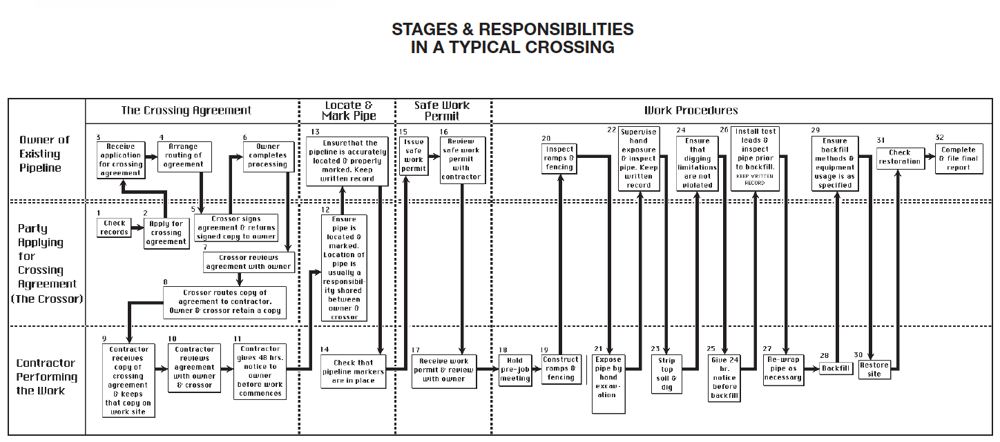
It’s your responsibility as a ground disturber to ensure
that all facility owners have responded to your locate
request.
NOTE: For Safe Work Permit (Boxes 15 through 17) follow individual company guidelines and policies.
22
Prior to any work beginning, the ground disturber must establish if any buried facilities exist in the construction area and inform the facility owner(s).
Use these sources of information:
- Alberta Energy Regulator (AER)
- National Energy Board (NEB)
- Alberta One-Call
- Facility signage or other visible indicators
- Land Title Deeds
- Discussion with landowner
- Municipal authorities
- Local utilities
- Alberta Environment Water Resources
- Line Locator Sweep/Search
- Survey, plot plans and any other available maps and references
Most energy-related pipelines are registered with the Alberta Energy Regulator (AER). Plans showing registered pipelines are available from the AER. Phone (403) 297-8311 Calgary or toll free 1-855-297-8311 or visit www.aer.ca
Pipelines that cross provincial or international boundaries are governed by the National Energy Board (NEB) toll free 1-800- 899-1265 or visit www.neb-one.gc.ca
Note: AER database includes NEB regulated pipelines.
24
Visit www.AlbertaOneCall.com or call 1-800-242-3447 to request that buried facilities be located and marked. Submit your request at least TWO full working days before you start your project. Alberta One-Call records all information related to your locate request and is sent to each registered utility owner (members of AOC) affected by your excavation. This service is provided at no cost to the ground disturber.
You are still required to make direct contact with any facility owners who are not members of Alberta One-Call.
It’s your responsibility as a ground disturber to ensure that all facility owners have responded to your locate request.
25
If company signs are visible, contact the company named.
CAUTION: Do not rely on the signs for location purposes as the buried facility will not be directly beneath the sign.
Visible indicators could suggest that a buried facility exists within the ground disturbance area. These indicators may include changes in vegetation, depressions in the land, cuts through tree lines, etc.
Search for encumbrances on land title deeds for title certificates and survey plans, obtain the legal description of the land and make a search at the local Land Titles Office.
Easements or Utility Rights of Way are indicated by:
- a blanket description, which covers a whole parcel of land.
- a registered plan found in the Survey Records.
- Metes and Bounds that are written descriptions of locations.
CAUTION:
Several different parties may be involved in a crossing; therefore relevant plans may be in use by someone else at the time of your search. Some rights of way and easements are not registered on the survey plans.
Land title deeds are not helpful where facilities are confined within road allowances.
Landowners may be aware of buried facilities that are not otherwise documented. This could include privately owned facilities.
26
Many municipalities have installed shallow facilities in various facility rights of way. It is important to make contact with them to see how their facilities may impact your ground disturbance.
Those that are not registered with Alberta One-Call need to be contacted directly.
Water wells and their associated facilities, irrigation, industrial water facilities and intake and discharge facilities, etc. are licensed through this agency (Northern Region 780-427-7617, Southern Region 403-297-5959, Central Region 403-340-7052).
Competent line locating personnel have the ability to sweep/ search for facilities that emit an electromagnetic field.
During the life span of a buried facility, maps and plans are created. A map provides a guideline as to the underground facilities at the time the map was created. Maps can be resourced from commercial mapping companies, facility owners, land titles, original construction company and survey companies. Low-pressure gas distribution pipeline location maps are available from the AER Data Centre.
27
The ground disturber may find it useful to use a copy of this checklist to keep track of the completed checks:
A Request information from AER database
1-855-297-8311, or NEB toll free 1-800-899-1265
Assemble information required by Alberta One-Call
Visit AlbertaOneCall.com or call 1-800-242-3447
Record information received:
Names:
Addresses:
Phone:
Appointments:
Check the site for warnings or information signs erected by facility owners.
Search Land Title deeds for existence of buried facilities, utility lots, or easements.
Ask landowner about buried facilities on his land.
Contact municipal, local utility and other company(s) owning facilities in the proposed work area. (Reminder- not all buried facilities are registered with Alberta One- Call).
Reference available maps, drawings, survey plans and any other reference material available.
Make arrangements with the owner(s) to locate and mark their facility(s).
Contact owner if other facilities are found during the search or by other means.
28
NOTE: |
Locator sweeping and hand excavation are required to confirm the exact position and depth of the buried facility. This is especially true in old areas where records may not be complete.
2 (two) full working days notice (not including Saturday, Sunday or Statutory Holidays) is required for the facility owner to provide locates.
|
29
Written approval is required by pipeline owners and may be required by other facility owners whose facilities are in a right of way on private land. Always contact the facility owner for information on whether or not a crossing agreement is required. It may take up to 21 days for a facility owner to respond to an agreement request.
The crossing agreement, signed by authorized representatives of both the facility owner and the crossor, must be in effect and on site prior to any work commencing on the right of way.
The first three of the following four sections contain checklists which will assist facility owners with the preparation of the crossing agreement:
- Processing the crossing agreement
- Information normally found in a crossing agreement
- Guidelines for facility drawings attached to the crossing agreement
- Guidelines for issuing Work Permits
The guidelines are widely accepted as industry standards. Engineering or other special considerations may require some changes in the figures quoted.
The procedures outlined in these sections should be followed for any work considered by the facility owner to be of a major nature. Minor work or simple crossings that involve no excavation may at the discretion of the facility owner, be handled by other forms of agreement.
31
A legal land description of the intended crossing must be provided by the crossor before the facility owner can process the crossing agreement.
Each company has its own structure; however, the facility owner should prepare a routing slip that organizes input from the following (as appropriate):
Recipient of the crossing request
Crossing coordinator
Drafting department
Legal departmen
Engineering
Land department
Secretarial assistance
Final check
Signature of crossor’s representative
Signature of facility owner’s representative
Final distribution
The facility owner should check whether the crossing agreement requires, and contains, the following information:
date of agreement
owner’s name
applicant’s name
name of facility
location of facility (legal land description)
size (outside diameter) and material of pipe
purpose of crossing facility
drawing numbers
name and phone number of crossing coordinator (crossor)
name and phone number of construction supervisor (contractor)
name and phone number of person to contact before construction (owner)
expiry date of agreement
notice required before work commences (at least 48 hrs.)
32
notice required before backfilling (at least 24 hrs.)
method of exposing facility
liability for damage
signature of applicant
| NOTE: |
See “Guidelines For Facility Drawings Attached to the Crossing Agreement” in Section 3.3 for engineering specifications that may be included. The contractor must keep his copy of the agreement at the work site until work is completed.
|
The facility owner should check whether the crossing drawings require and contain the following information:
- Detail drawings or other suitable means to show facility location (property lines and descriptions, geographic and physical landmarks)
- Detailed drawing of exact area of crossing including measurements from fixed reference points
- A transverse cross section showing the following:
- diameter and material of existing facility(s)
- profile of proposed disturbance
- clearance required between existing facility(s) and foreign structures
- A longitudinal cross section to show:
- changes in elevation
- clarification of transverse cross section
- A plan and profile view showing the following:
- direction of existing facility(s)
- direction of proposed crossing
- angle between crossing and existing facility. (as close as possible to 90° and not less than 45°)
- top of facility to top of road grade measurement
- location and color of coding of markers
- location and depth of ramps
- location of temporary fencing
- location of facility exposure points
- expiry date
33
| NOTE: |
The drawing should be clearly marked with a note stating that no ground disturbance is permitted within the controlled area or right of way until the facility is hand exposed and all markers, fences and ramps are in place.
|
- As required check whether detail drawings should be prepared to show the following:
- backfill material and specifications
- test leads
- cathodic protection arrangements
- pipe supports during excavation work if required
- safety fencing required around excavations
- other special requirements
- operating pressures
- facility material
- type of product
- rewrapping arrangements & cost responsibilities
34
A safe work or ground disturbance permit may be issued by the facility owner to the contractor immediately before work commences in order to:
- define the nature and scope of the work permitted
- identify and control hazards associated with heat, flame or spark producing devices in the presence of combustible or toxic hydrocarbon products
- the contractor must sign the permit to indicate acceptance
If two or more operations are to be carried out simultaneously, the holder of the first permit must receive a copy of the second and subsequent permit issues.
A hot work permit - OH&S defines hot work as any work in which a flame is used or sparks or other sources of ignition may be produced including:
- cutting, welding, burning and gouging, riveting, drilling, grinding, and chipping
- using electrical equipment not classified for use in a hazardous location (this could include locating equipment)
- introducing a combustion engine to a work process
The permit must be issued, or reissued, every 24 hours prior to start of work, at shift changes and when a change occurs in supervisors (contractor or owner).
A cold work permit - may be issued for extended periods of time for work in a non-restricted area.
35
Any changes to the limitations shown in this section must be written into the crossing agreement and clearly pointed out to the contractor.
The controlled area may also be referred to as the safety zone. For pipelines the controlled area is 30m either side of the centerline of the pipeline as defined by the AER (known as the prescribed area for NEB regulated pipelines). The owner must be notified of intent to cause a ground disturbance within this area.
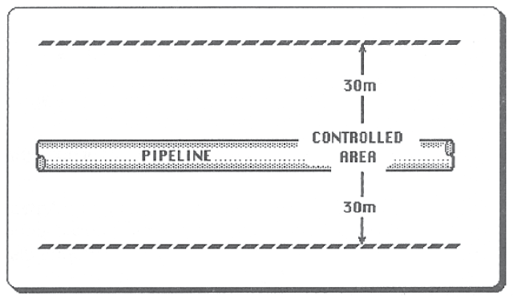
For other buried facilities the hand expose zone can vary from 1m to 5m. It is important to reference the appropriate regulations such as the Alberta Occupational Health and Safety Code or the Alberta Electrical and Communication Utility Code.
37
The right of way/easement has specified boundaries within which the owner has a right to construct a facility anywhere. A written agreement must be in place, the owner must be given at least 48 hours notice, and the facility hand exposed before work can commence within the right of way (or within 5m of the pipeline). The owner’s representative must be on site when work commences within the right of way/easement.

4.3.1 If a contractor plans to disturb the ground within the Control Area/Prescribed Area but outside the right of way with machinery (in the shaded area in the figure below), then:
- A written agreement may be required.
- The location of the facility must be marked.
- The location of the boundaries of the right of way should be marked.
- Temporary fencing may be specified at the owner’s discretion to protect the facility along the right of way––especially if the proposed ground disturbance will run parallel to the existing facility.
38
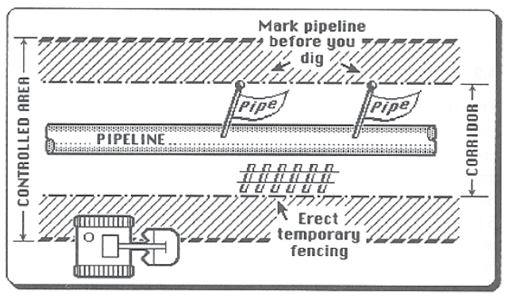
4.3.2 If the ground disturbance is within the right of way (as shown below).
- A written agreement is required.
- The facility must be located and marked.
- The facility must be hand exposed before digging within 5 meters of the facility.
- Machinery must not be used to dig within 600mm of either side of the exposed pipe or within any distance beneath the pipeline unless under the direct supervision of a representative of the facility owner.
| NOTE: |
These are the minimum distances as per the Alberta Pipeline Rules. Because of the nature of the crossing or the contents of the facility, some owners may require that machinery is kept further away than these minimums.
|

39
Ramps and/or matting may be specified by the facility owner. The pipeline company shall provide guidance on acceptable methods of crossing the pipeline. Larger diameter pipes are more prone to distortion or damage by rock impact. There must be a minimum of 1.5m (or as specified by the owner) of cover over vulnerable pipelines before heavy equipment can cross. If the cover is less than the specified minimum, a ramp and/or matting must be installed and maintained.
Equipment crossings must be confined to the use of the ramp and/or matting. The ramp and/or matting could extend from boundary to boundary of the right of way on either side of the pipeline or as specified by the pipeline owner.

NOTE: When removing the ramp, ensure that the pipeline remains protected from heavy equipment.
Foreign structures crossing over or under an existing facility must maintain a minimum clearance of 300mm as shown below, or as directed by the facility owner. Written approval is required for exceptions.
40

The facility owner must have at least 24 hours notice to arrange an inspection of the exposed pipe before it is backfilled.
An existing facility need not be exposed where it has been located and marked in accordance with 6.1 and 6.2 of this guide; and
- Hand excavation is used for a distance of 5m on either side of the located and marked centre line of the existing facility to a depth which is 300mm deeper than the depth of the intended service; or
- Its position has been verified to the satisfaction of the permittee or licensee by comparison with recorded measurements of the facility taken during a previous exposure.
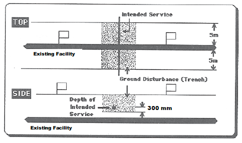
41
It is recognized that the hand excavation required when a ground disturbance is intended to be carried out within 5m of a facility is not practicable when the depth of cover over the facility is more than 1.5 m. It is acceptable to use the procedure outlined below, which allows for part of the excavation to be carried out by mechanical means. The procedure is designed to satisfy the general safety requirements for excavation of deep trenches.
| Step 1 |
Alignment of the facility to be exposed must be established and marked at 3m intervals. |
| Step 2 |
The estimated depth of the facility must be determined. |
| Step 3 |
Hand dig a 1.5m deep trench at a right angle to the facility. The length of the trench is to be equal to twice the determined depth of the facility, plus an additional 0.25m. The trench is to be centered across the alignment of the facility (see Figure 1). |
| Step 4 |
If the first hand excavation does not intercept the facility, then mechanical excavation of the material covering the facility is permitted to a depth of 0.5m less than the depth of the trench. The mechanically excavated area is to be in the shape of a square, and is to be centered around the hand dug trench with a length and width that are each twice the determined depth of the facility, plus an additional 0.25m (see Figure 1). |
| Step 5 |
The next step is to deepen the trench by hand 1m more, while reducing the length by 1m. After the trench is completed, mechanical excavation can be made to a depth that is 0.5m less than the depth of the hand-dug trench. The length and width of the square mechanically excavated area shall also be decreased by 1m. (see Figure 2). |
| Step 6 |
Repeat the procedure from step 5, and each time reduce the length of the hand-dug trench and the length and width of the mechanically excavated area by 1m until the facility is located (see Figure 2). |
42
Figure 1
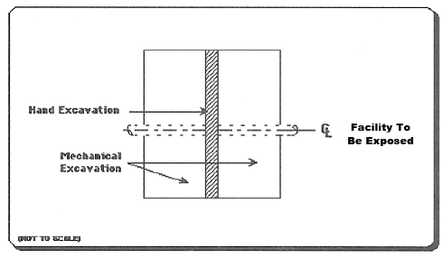
Figure 2

Excavation techniques have been developed using water or air jets with a vacuum hose to expose buried facilities.
See Section 1.2 Causes and Prevention of Damage to Buried Facilities for related information.
Part 32 Section 448 of the OH&S Code states “any non- destructive technique used as an alternative must be acceptable to the owner of buried facility”.
For further information see the OH&S Code Explanation Guide and contact the facility owner for specific requirements.
43
Where a pipeline is to be exposed by its licensee, the licensee may make application to the AER for approval to use excavation procedures not specifically allowed in the Pipeline Regulation. The application should describe the process, by reference to diagrams if necessary, and indicate why the licensee believes it to be a safe method of excavation.
44
Fencing may be specified in the crossing agreement by the facility owner in order to protect buried facilities from heavy equipment and to guide machine operators to designated travelways.
It is the ground disturber or crossor’s responsibility to do the following:
- Install and maintain fencing as specified (usually snow fencing).
- Install temporary fencing (as required) to reasonably protect open excavations left overnight or longer.
- As an alternative to fencing, backfill excavation temporarily with sand.
- Install road barricades and construction signs as required.
- Install warning signs with flashers by the fence if near a roadway.
As per Occupational Health and Safety Code Part 32 Section 444 Marking an Excavation.
The facility owner should specify where and how the ground disturber is to construct ramps and/or matting. Following are some guidelines:
- Ramps and/or matting are normally required where vulnerable facilities are crossed.
- Temporary crossing ramps and/or matting may be installed over the facility right of way to maintain adequate clearance between the traveled surface of the ramp and/or matting and the facility (1.5m or as otherwise specified by the facility owner).
The ground disturber should:
- Construct ramps so that the fill is pushed onto the right of way with a bulldozer prior to the equipment traveling onto the right of way.
46
- Inspect ramps and/or matting periodically to ensure that they have not settled.
- Use rip-rap/rig mats or other mechanical protection as required by the facility owner between the ground surface and the ramp, as required by the facility owner.
Hand digging or other non-destructive excavation technique is mandatory!
The facility owner should specify this in the crossing agreement. Hand exposure is required to positively identify facility location, direction and depth before mechanical excavation is permitted within 5m of the facility.
The ground disturber must expose facilities at point of crossing by hand digging 600mm on either side of the facility and to the full depth of the trench, ditch or other disturbance. 600mm is a minimum and may be extended by the owner if justified by safety or engineering considerations. The assigned inspector must be present during facility exposure.
The use of hydrovac or airvac (see Section 4.8) requires the facility owner’s approval.
Adhere to Occupational Health and Safety Code:
- Shore trenches and excavations against caving in.
- Access and exit by ladder.
- Monitor for presence of toxic flammable gases.
- Ensure proper slope of walls (limits).
- Keep edges of excavation free of loose soil, debris, spoil piles and material stockpiles.
- Obtain an Occupational Health and Safety Work Space Entry Permit if required.
- Take care when the machine approaches the outer limits of the hand excavation area.
47
The facility inspector must be on site during the backfill operation and detailed as-built drawings should be made before backfilling. The ground disturber should follow these guidelines during the backfill process:
- Notify facility owner at least 24 hours prior to backfill operations.
- Backfill using sand or other select material for initial backfill as specified by the facility owner.
- Shovel sand around and under pipe to provide firm support.
- Do not use heavy vibrating equipment for compaction directly over pipelines until sufficient cover is in place or as per facility owner requirements.
- Where fill may otherwise settle, compact with hand operated compactor in approximately 150mm layers or as agreed upon with the facility owner, compacting each layer to prevent future settlement.
Responsibility for site restoration (i.e., top soil replacement, re-seeding, etc.) is usually specified in the crossing agreement. Usually, this is part of the ground disturber’s work.
The ground disturber should follow these guidelines:
- Compact sufficiently to prevent future settlement so that the restored surface is level and compatible with original surface.
- Remove temporary fencing and barricades.
- Remove temporary buildings.
- Remove all temporary markers (pin flags and lath).
- Remove spoil piles, garbage and other debris.
- Remove temporary ramps.
- Install warning signs as specified by the facility owner.
| NOTE: |
When removing the ramp, ensure that the facility remains protected from heavy equipment. |
48
The facility owner is responsible for ensuring that buried facilities are accurately located. The owner may:
- Use his own staff to perform this task.
- Assign the task to a qualified representative.
The party locating the facility is responsible for marking the facility centre line (see Section 6.2).
| NOTE: |
Locating should only be done by a competent and qualified individual. |
See the following figure for locations of markers.
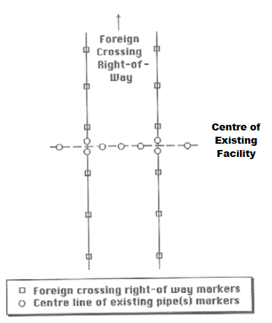
50
6.2.1 Markers Delineating Centre Line Of Facility
The markers delineating the centre line of the existing facility should be planted by the party locating the facility. The markers should:
- Conform to the international color code for marking buried facilities.
- Be spaced not more than 5m apart or, where facilities follow a curve, spaced so that the curvature is clearly visible.
| PROPOSED EXCAVATION |
White |
| SURVEY MARKINGS |
Pink |
| ELECTRICAL |
Red |
| ELECTRICAL |
Red |
| GAS & OIL |
Yellow |
| COMMUNICATION |
Orange |
| WATER |
Blue |
| SEWERS |
Green |
| RECLAIMED WATER, IRRIGATION, And SLURRY LINES |
Purple |
- Be marked and maintained with appropriate colored surveyor’s tape, firmly tied to 1.2m stakes. Pin flags and other marking tools are used by many locators.
- Extend at least 30 m beyond the proposed working area and be positioned directly above the centre line.
- Form a cross consisting of two stakes at the points where the existing facility centre line and the foreign crossing right of way intersect.
51

NOTE: Markers must be replaced immediately if they are inadvertently knocked over or removed. If the markers have been removed then the locate is no longer valid and must be relocated.
6.2.2 Markers Delineating Right Of Way
Markers should also be used to delineate the right of way of the existing facility. Care should be taken that these markers are not confused with the facility centre line markers. The facility owner should provide information about the right of way and specify who is responsible for placement of these markers.
Recommendations for the markers are:
- Temporary fencing
- Temporary barricades.
6.2.3 Markers Delineating Right Of Way of Foreign Crossings
The markers delineating the right of way of the foreign crossing should be specified by the crossor. Recommendations for these markers are:
- Fluorescent pink surveyor’s tape tied firmly to 1.2m stakes.
- Markers spaced at intervals of not more than 50m apart along the length of the foreign right of way.
Installation may be done by the owner (preferred) or assigned by the owner to the crossor or the contractor. If work is assigned, test leads must be installed by qualified personnel as specified by the facility owner’s engineering department and checked by the facility inspector.
52
The facility owner must inspect the facility before backfilling takes place. The ground disturber must give at least 24 hours notice to the facility owner.
The inspector should:
- Inspect the full diameter of the facility, where possible, for scrapes, gouges, or other damage.
- Supervise any re-wrapping that may be necessary.
- Ensure that the installation of test leads meets the provision of Section 6.3.
- Measure and record the clearance between the existing facility and any foreign structure.
- Photograph and note condition of facility before backfill.
Protective coatings are required where it is necessary to isolate the external surface from its environment. The condition of the wrapping must be checked by the facility inspector prior to backfill.
The inspector should ensure that:
- Application of the coating suits the conditions.
- The new coating is compatible with the existing coating.
- The coating is compatible with the cathodic protection (if applicable).
- When applied, the coating is able to resist the underfilm migration of moisture.
- The coating is sufficiently ductile to resist cracking.
- The coating has sufficient mechanical strength to resist damage imposed by normal handling.
It is recommended that all exposed pipe be tested with a holiday detector set appropriately for the coating. If a detector is not used it is recommended that the existing line be double wrapped.
53
Where a pre-job meeting is specified in the crossing agreement, the ground disturber is legally bound to comply.
The intent of the pre-job meeting is to inform crew members of the procedures, hazards and limitations that they must observe during the crossing.
For major jobs it is recommended that representatives of the facility owner, ground disturber (crossor) and contractor be present.
- A short initial meeting, before any work commences, with all members of the ground disturber’s crews involved with the crossing to go over any safety considerations that they must observe during the crossing.
- “Tailgate” meetings that may be required to keep crew members informed on a daily basis and/or as job phases change.
- If required, a meeting with the crew members involved in the backfill procedure.
- These meetings should be documented and the document signed by all personnel on site.
The ground disturber may find the following checklist useful (Section 7.2) to plan and conduct the pre-job meeting.
The construction supervisor (ground disturber) or his designate will do the following:
- Organize the following:
- Schedule time and location of meeting and persons attending.
- Inform crew members of meeting schedule.
- Ensure crew members attend the meeting.
- Point out the following:
- Facilities must be hand or non-mechanically exposed.
55
-
- Existing limitations on mechanical excavation.
- Ground disturber’s responsibilities.
- Appropriately caution crew on common causes of accidents associated with the type of crossing.
- Use site plans and, if possible, on site examples to show the following:
- The number of facilities being crossed.
- Facility location and markings used.
- Facility elevation(s).
- Crossing location and marking(s) used.
- Crossing angle and area to be hand dug.
- Ramp and travelway locations and markers used.
- Explain the following:
- The nature of the material in any pipeline that will be crossed.
- The danger associated with striking, scraping or in any way damaging a pipeline or other buried facility.
- The long-term implications of leaving any exterior damage unrepaired.
- Action to be taken in the event that a facility is damaged.
- Facility inspector’s role, duties and powers.
- Post and draw attention to list of field location telephone numbers and emergency numbers.
- Review the work phases that will occur and identify responsibilities.
- Assign responsibilities for follow-up, such as:
- Tailgate meetings.
- Inform crew members who were not present at the original meeting or who were hired at a later date.
- Advise supervisors and crew of their responsibility to keep their information updated, even at times when the supervisor may be absent (especially evening and weekends).
- Monitor responsibilities of supervisors and crew.
56
All applicable forms in this section should be completed by the facility owner. The signatures of all parties involved in the crossing will provide a record of agreement.
Date of agreement
Owner’s name
Applicant’s name
Name of facility
Location of facility (legal land description)
Size (OD) and material of facility
Purpose for crossing facility
Name & phone number of crossing coordinator
Name & phone number of facility inspector
Name & phone number of construction supervisor
Name & phone number of person (owner) to contact before construction
Date and time to meet inspector on site
Expiry date of agreement
Notice required before backfilling (usually 24 hrs.)
Method of exposing facility
Liability for damage
See section 8.3 also.
58
The facility inspector should review with the ground disturber the following:
Type of permit
Length of time that is in force
Work permitted
Specific hazards & limitations
The facility inspector should answer any questions that the ground disturber may have regarding interpretation of either the written agreement or permit.
The facility owner’s representative should review with the ground disturber, drawings of the proposed crossing including:
Location of facility
Crossing angle
Minimum clearances required
The facility is to be located by:
The party responsible
Date and time
Equipment used
59
Party responsible
Date and time
Description of facility line markers
Colour
Spacing
Height
Description of foreign crossing right of way markers
Colour
Spacing
Height
Description of existing facility right of way markers
Construction
Distance from facility centre line markers
Party responsible
Date and time
Description of ramps
Location
Height
Machine(s) used
Machinery travel limitations
60
Party responsible
Date and time
Hand Exposure
Hydrovac or Airvac approved
Inspector to be present
Yes
No
Fencing or temporary backfill required around excavation
Measured depth of facility
Controlled area/prescribed area is 30 m on either side of the centerline of the pipeline (AER/NEB) and 5 m or width of right of way for all other buried facilities.
Hand expose zone is 5m for a pipeline, direct bury trunk or toll fibre optic cable, and high voltage power cables; and 1m for other types of buried facilities.
Notify facility owner of construction work prior to working within controlled area.
Yes
No
Mechanical digging is NOT permitted until facility is hand exposed.
Minimum clearance between existing facility and foreign crossing is:
|
m above
|
m left
|
|
m below
|
m right
|
61
Party responsible
Date & time of meeting(s) (must be documented)
Agenda to be covered is as per checklist
Yes
No
Equipment to be used
Mechanical soil stripping is limited to m on either side of the facility
Equipment to be used
Regulations to be observed
Party responsible
Date of inspection
Review of acceptable procedure
Check integrity of CP
Party responsible
Owner notified
Date & time
62
Party responsible
Date & time of meeting(s)
Bed specification
Backfill material
Compaction specifications
Surface finish
Yes
No
Backfill inspection report
Party responsible
Specifications
Inspection required
Yes
No
Facility owner
Date
Crossor
Date
Contractor
Date
63
The facility inspector should complete this form, ensuring that each step is also dated:
Crossing agreement number
Crossing agreement reviewed by
Crossing agreement on site
Yes
No
Work permit issued, type and number
Facility location method
Other facilities found in location & action taken
Pre-job meeting conducted by
Right of way fencing installed
Yes
No
Ramps and/or matting installed as per plan
Yes
No
Digging in right of way before facility exposed
Yes
No
65
Facility exposed by hand or other non-mechanical means
Yes
No
Inspector present during exposure
Yes
No
Depth of facility
Size of facility (OD)
Facility Material
Condition of coating
Type of coating
OH & S code requirements for trenching observed
Yes
No
Excavation fenced
Yes
No
Signposted
Yes
No
Traffic movement as specified
Yes
No
Test leads installed
Yes
No
66
Facility inspected before backfill
Yes
No
Clearance between pipe and foreign structure
Notice received before backfill commenced
Yes
No
Backfill method and materials as specified
Yes
No
Inspector’s report completed
Yes
No
67
| 10.1.1 |
National Energy Board Act
NEB Pipeline Damage Prevention Regulations - Authorizations NEB Pipeline Damage Prevention
Regulations - Obligations of the Pipeline Companies |
| 10.1.2 |
Alberta Pipeline Act
Pipeline Rules |
| 10.1.3 |
Alberta Gas Distribution Act |
| 10.1.4 |
Alberta Safety Codes Act
Electrical and Communication Utility Code |
| 10.1.5 |
Canadian Electrical Code (CEC) |
| 10.1.6 |
Alberta Occupation Health & Safety Act
Occupational Health and Safety Regulation
Occupational Health and Safety Code and Explanation Guide |
| 10.1.7 |
Labour Canada
Occupational Health and Safety Regulation
General Occupational Safety and Health Regulations |
| 10.1.8 |
Alberta Exploration Act |
| 10.1.9 |
Oil & Gas Conservation Act
Oil and Gas Conservation Regulations |
| 10.1.10 |
CSA Z662-15
Oil and Gas Pipeline Systems |
| NOTE: |
many of these documents are available through the Queen’s Printer www.gov.ab.ca/qp |
69
A ground disturbance is defined as any activity that results in a disturbance to the ground regardless of the depth of the disturbance.
If any of the items in the checklist are answered NO, proceeding with any ground disturbance could result in injury to personnel, damage to equipment or the environment.
Supervisor approval shall be recorded, and documentation of the decision is required.
10.2.1 Ground Disturbance Checklist
Location
Legal Land Description
Date
Expiry Date
Scope of Work
70
10.2.2 Record Confirmation
| 1. |
Do you have a copy of the survey drawing for the proposed ground disturbance area? |
Yes
No
N/A
|
| 2. |
Have you obtained a copy of the land title (listing encumbrances)? |
Yes
No
N/A
|
| 3. |
Do you have a copy of all written agreements for any facility identified within 30 meters of the work area? |
Yes
No
N/A
|
| 4. |
Did you adhere to the agreement notification requirements? |
Yes
No
N/A
|
| 5. |
Have all buried facilities in the controlled area been identified? |
Yes
No
N/A
|
| 6. |
Has the presence of all facilities in the proposed ground disturbance area been discussed with the landowner |
Yes
No
N/A
|
| 7. |
Have you obtained and/or reviewed a current copy of appropriate maps (e.g.AER and low pressure gas distribution pipeline maps)? |
Yes
No
N/A
|
71
10.2.3 Locate Information
| 1. |
Has the one-call centre been notified?
Ticket # _____________ |
Yes
No
N/A
|
| 2. |
Have all facility owners who are not members of the one-call centre been notified? |
Yes
No
N/A
|
| 3. |
Have the facility owners inspected the line location prior to the ground disturbance commencing? |
Yes
No
N/A
|
| 4. |
Is the line locator certified? Is the line locator competent/qualified? Certificate issued by ___________ |
Yes
No
N/A
|
| 5. |
Has the proposed ground disturbance area been electronically swept for buried facilities within the controlled zone? |
Yes
No
N/A
|
| 6. |
Have all facilities within the controlled area been located and marked? |
Yes
No
N/A
|
72
10.2.4 Visual Site Inspection
| 1. |
Have all buried facilities as identified on the provided drawings been located and marked in the controlled/hand expose area for the proposed ground disturbance and do they coincide with drawings or as-builts? |
Yes
No
N/A
|
| 2. |
Has the surrounding area been visually checked for indications of buried facilities? e.g. cut lines, ground settling, vegetation changes, etc. |
Yes
No
N/A
|
| 3. |
Are there any visual signs of recent activity not reflected in the provided drawings? |
Yes
No
N/A
|
| 4. |
Have all the buried facility locate marks been referenced to fixed features? |
Yes
No
N/A
|
| 5. |
Have utilities been contacted about the safe limits of approach to overhead power lines for equipment? |
Yes
No
N/A
|
| 6. |
Are overhead power line Caution signs in place? |
Yes
No
N/A
|
73
10.2.5 Pre-Ground Disturbance
| 1. |
Have all conditions of the written agreement been met? |
Yes
No
N/A
|
| 2. |
Has a pre-job meeting with representative of the facility owner been held to discuss the scope of the work? |
Yes
No
N/A
|
| 3. |
Have all buried facilities been exposed as per the facility owners requirements, agreements, and applicable regulations? |
Yes
No
N/A
|
| 4. |
Have construction crossing indicators been placed at point of crossing for all buried facilities being crossed? |
Yes
No
N/A
|
| 5. |
Have the buried facility owners been given the required advance notice (minimum 48 hours)? |
Yes
No
N/A
|
| 6. |
Is fencing required around the excavation site? |
Yes
No
N/A
|
| 7. |
Will the facility owners have representatives on site during the exposing of their facilities? |
Yes
No
N/A
|
| 8. |
Has a pre-job meeting been held with all workers? |
Yes
No
N/A
|
| 9. |
Have workers been notified that no mechanical excavation is permitted in the hand expose zone until the buried facility has been hand exposed or hydrovaced? |
Yes
No
N/A
|
| 10. |
Is a safe work/ground disturbance permit required? |
Yes
No
N/A
|
74
To order additional copies please send an email request to:
eapuoc@gmail.com
Be sure to indicate quantity required and address to ship printed materials.
Please be aware that individuals/companies will be responsible for shipping costs.
76